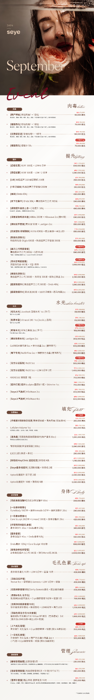

把韩国皮肤科、医美诊所的公开价格整理成可以搜索和比较的数据库。项目、规格、活动价、VAT、更新时间，一目了然。

来自第一家标准化诊所 · 세예클리닉
LDM 6 min + calming pack
Aqua Peel + calming pack
Lhala Peel + calming pack
Shurink Universe Ultra 300 shots
InMode FX full face 10 min
Oligio 300 shots + Tune Liner
现在只有 1 家诊所，接下来每增加一家，就能开始做横向价格比较。
我们把诊所官网的复杂菜单，整理成用户能看懂的价格数据。
搜索 Ulthera、Thermage、Rejuran、Juvelook、Botox 等项目，快速定位想做的治疗。
把 cc、shots、分钟、部位等规格写清楚，避免“看起来便宜，实际不是同一个套餐”。
未来增加更多诊所后，可以按地区、项目、价格直接比较，再去官网确认最新条件。
Seye Clinic · 首尔瑞草区 / 江南·新论岘
세예클리닉 官网价格多数标注 VAT 별도。本站保留原始税费状态，并记录来源与更新时间。